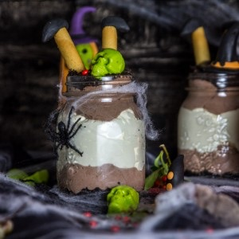

Cheesecake in a jar à l’Oreo

Aujourd’hui je vous retrouve avec une toute nouvelle recette pour Halloween (et certainement la dernière pour cette année) mais aussi et surtout pour vous parler des cheesecakes in a jar (une vraie petite tuerie que vous DEVEZ tester!!!).
Avec cette recette de cheesecake je clôture ma session de recettes spéciales pour Halloween 2015 (et j’ai hâte d’être à l’année prochaine). Si les autres recettes que je vous ai proposées sont 100% uniquement consacrées à Halloween, celle-ci peut se préparer, se déguster (se dévorer) tout au long de l’année et vous pouvez adapter votre décoration selon la période // occasion de l’année et comme vous pouvez le voir je me suis encore bien amusée côté déco^^.
Je ne sais pas si vous avez déjà vu ou entendu parler de ces nouveaux cheesecakes mais moi j’en raffole!! Ces cheesecake in a jar sont hypers rapides à préparer car ce sont comme mon cheesecake Oreo, des cheesecakes sans cuisson (et ils sont trop trop crémeux)!!!
Ici, je vous propose un cheesecake aux Oreo in a jar pour Halloween! Vous avez donc une base Oreo, une chantilly au chocolat et une crème préparée à partir de cream cheese :D. Honnêtement je n’aime pas quand c’est trop lourd et qu’il faut faire une sieste de trois heures pour digérer mais franchement la crème est très très aérée ce qui rend le cheesecake plutôt léger et c’est d’autant plus agréable.
J’ai décidé de les préparer dans des grosses jarres mais évidemment vous pouvez faire de petites verrines ou présenter ça dans des verres de taille moyenne ça fera très bien l’affaire. Pour vous donner un ordre d’idée mes jarres font 13.5cm de hauteur et ont une contenance de 50cl et je dirais qu’une jarre convient largement pour deux personnes.
Je suis vraiment super heureuse de partager cette recette avec vous et que ce soit pour Halloween ou pour une autre occasion j’espère que vous vous laisserez tenter par cette petite gourmandise. Je vous laisse maintenant avec la recette et je vous souhaite une belle semaine!!
Ingrédients
- Oreo - 15
- Beurre fondu - 60g
- Crème liquide à 30% - 200ml
- Sucre glace - 4 càs
- Cacao en poudre non sucré - 2 càc
- Crème liquide à 30% - 250ml
- Cream cheese - 230g
- Sucre en poudre - 50g
- Gousse de vanille - 1
- Oreo - une dizaine
- Cigarettes russes
- Pâte à sucre noire
Instructions
- Dans le bol de votre mixeur, mixer 15 Oreo (ou écraser les Oreo dans une poche fermée et à l'aide d'un rouleau écrasez-les)
- Ajouter le beurre fondu et mélanger
- Tasser ce mélange au fond des jarres
- Placer au frais pendant la préparation de la crème
- Monter la crème liquide, en chantilly Pour ne pas rater votre chantilly, pensez à placer les batteurs et la crème liquide au congélateur 20 minutes auparavant. Vous pouvez aussi placer le bol dans lequel vous allez faire votre chantilly au frigidaire
- Ajouter le sucre glace au fur et à mesure puis le cacao tout en continuant de battre
- Une fois la crème montée mettez-la dans une poche à douille (munie d'une grosse douille) mais vous pouvez vous en passer et remplir vos jarres à l'aide d'une cuillère
- Mettre de la crème chantilly sur les Oreo au fond des jarres et en garder pour en remettre à la toute fin de la préparation si vous voulez faire comme moi
- Réserver au frais ce qu'il vous reste
- Dans un autre récipient, mélanger le cream cheese avec la gousse de vanille Ouvrez la gousse dans le sens de la longueur et récupérez la poudre noire à l’intérieur
- Ajouter le cream cheese à la crème chantilly et mélanger "délicatement" à l'aide d'une spatule
- Verser le mélange par-dessus la chantilly au chocolat en laissant un peu moins d'1/3 pour rajouter de la chantilly par-dessus
- Finissez de remplir vos jarres en rajoutant la chantilly au chocolat qui vous reste par-dessus la crème
- Placer au frais pendant minimum 6 heures
- Recouvrir la dernière couche de chantilly par des Oreo mixés ou réduits en miettes pour donner un aspect terreux
- Façonner des chaussures noires à l'aide de la pâte à sucre et faites-les adhérer aux cigarettes russes
- Planter les cigarettes russes dans le chessecake
- Pour faire les têtes de morts j'ai utilisé un moule à "bonbons" en forme de têtes de morts dans lequel j'ai fait couler du candy melt vert (à la pomme et au caramel^^)
Les tips de la communauté
Recette très appréciée pour sa présentation originale. Les commentaires saluent la créativité, la facilité relative malgré le temps de préparation, et la crème exquise. Une trop-plein de chantilly a été noté par une testeuse.
Astuces
- Fondre le candy melt au micro-ondes par petites portions progressives pour éviter la surchauffe
- Préparer en verrine pour la portion idéale
- Utiliser du Philadelphia comme cream cheese de référence
- Le candy melt aromatisé ajoute saveur et praticité
Variantes suggérées
- Réduire la quantité de chantilly si on la trouve trop importante
- Utiliser des moules de décoration variés pour la touche créative
Ajustements signalés
- Bien respecter les proportions de chantilly pour équilibrer avec la crème